Executive Summary
A pet-category advertiser wants to know which channels reach people who own pets, not people who watch them. This 5.82M-comment scrape carries no owner label, so the task is framed as weak supervision: three regex labeling functions write a noisy label, the model's features are chosen not to re-encode those rules, training and evaluation are held out by user, and 300 comments labeled against a fixed rubric provide the check. The answer is a real but modest signal, reported with an interval rather than a single large number.
Four findings
- Most of a high agreement score is rule reconstruction. Keep the rule's words in the vocabulary and the model reaches a ROC-AUC of 0.96 against the rule labels; drop them and it falls to 0.91. The 0.05 gap is not skill; it is the model rebuilding the regex; at a 1.5% positive rate the PR-AUC gap is the honest one, 0.21 vs 0.34.
- There is real signal underneath. Blind to the trigger words, the restricted-vocabulary model still reaches a ROC-AUC of 0.91 against the rule labels on comment length, care words, creator and user behavior, and language, not on "dog"/"cat".
- The model finds owners the rules miss. In the rule-silent stratum, the restricted-vocabulary model beats the full-vocabulary one against the rubric labels (0.70 vs 0.61). That is generalization, not memorization.
- Honesty costs a few precision points, not the result. At the headline τ_F1, precision vs the rubric labels is 0.58 (wide interval); a precision-first threshold still isolates ~45k users at ~0.94 precision.
Results at a glance
| Item | Result |
|---|---|
| Corpus | 5,818,979 comments, 2,536,890 users, 3,858 creators |
| Rule label | 1.52% positive (88,420 comments), three labeling functions |
| Agreement (vs rule labels) | ROC-AUC 0.91 masked vs 0.96 full; PR-AUC 0.21 vs 0.34 |
| Precision vs rubric labels | 0.58, 95% CI [0.17, 0.96] at τ_F1 (n=300) |
| Likely owners | 91,443 users (3.6%) at τ_F1 = 0.862; 44,623 (1.8%) at τ_P80 = 0.920 |
The label is synthesized from three regexes, and the same content words can enter the model; keep them in the vocabulary and it naturally reaches a ROC-AUC of 0.96 against the rule labels, but most of that is rebuilding the labeling rule itself. This analysis defines the gap between 0.96 and the masked 0.91 as "rule reconstruction" and deducts it; and the number that actually matters is not any ROC-AUC but precision against the 300 rubric labels, which measures how often the model is right about a real person.
The Corpus
The dataset is course-provided and not publicly available: comments scraped from pet-focused YouTube channels, in three columns (creator_name, userid, comment). After dropping 491 empty comments, 5,818,979 rows remain, from 2,536,890 users and 3,858 creators. Comments are short: mean 77.3 characters, median 43, 95th percentile 249. Four structural facts constrain everything downstream; they describe how the data was collected: 67.1% of users comment exactly once, 85.1% appear under a single creator, the top 38 creators hold 66.1% of all comments, and the Gini of comments across creators is 0.944. This is a creator-comment dump, not a user panel.
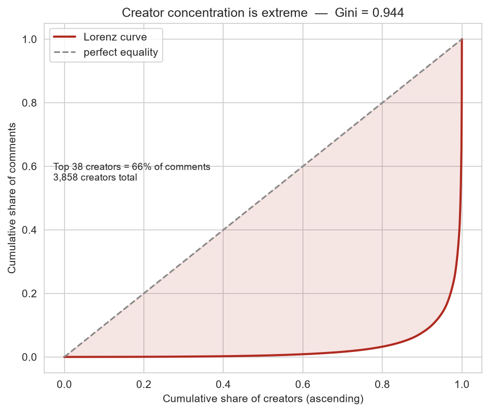
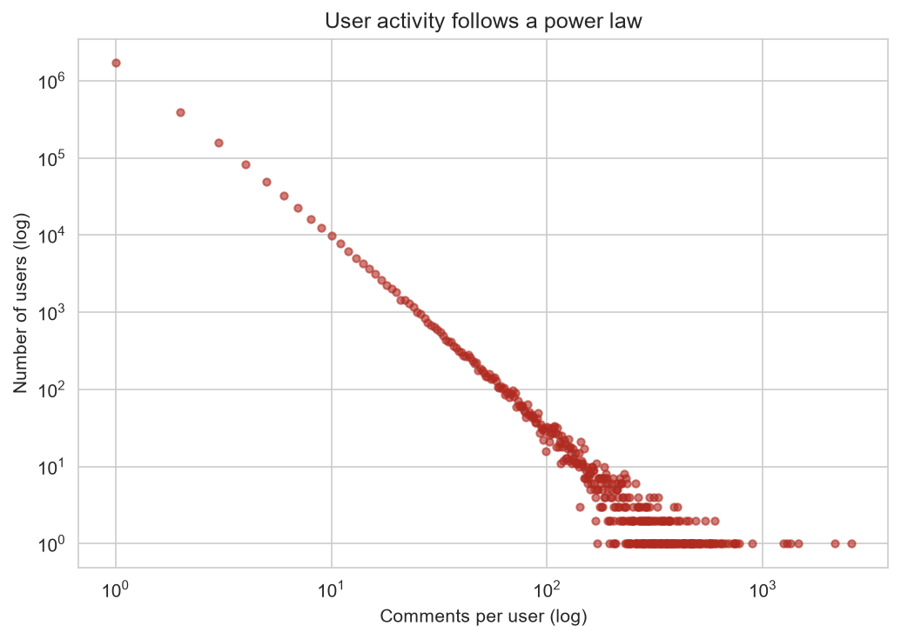
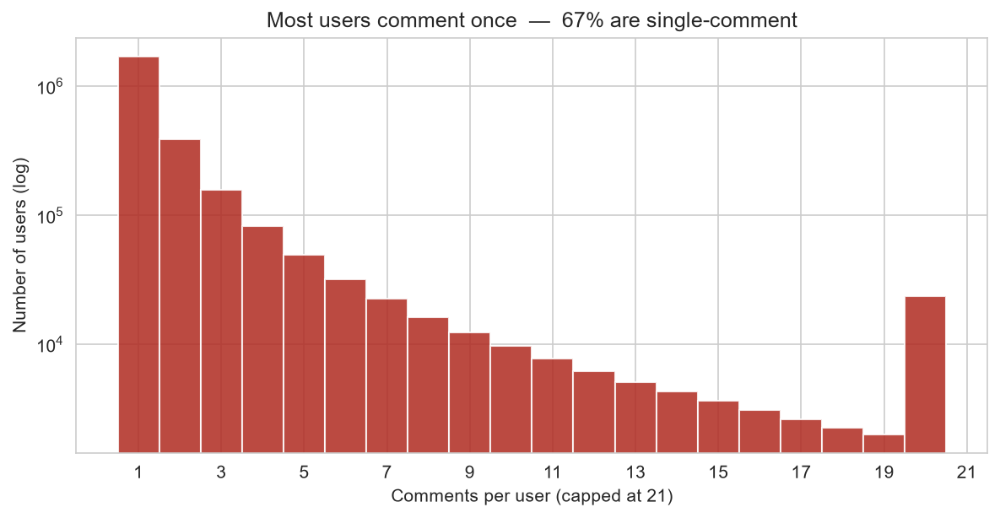
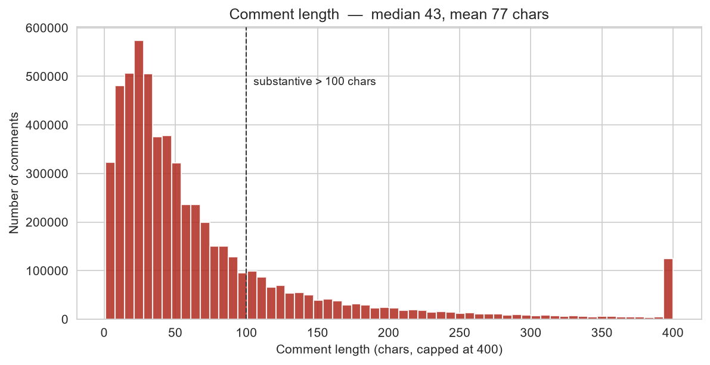
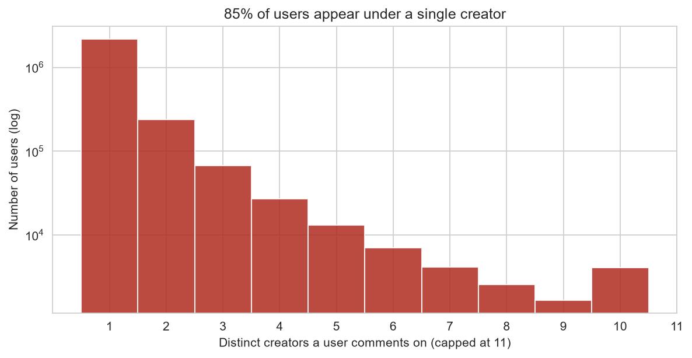
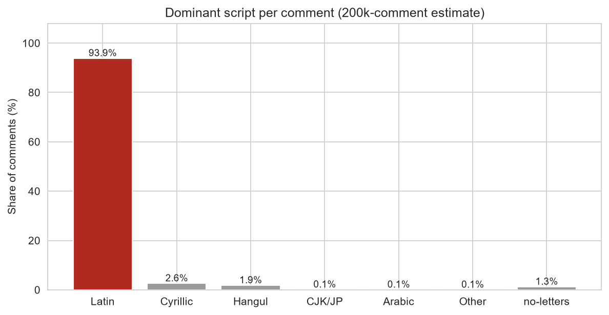
Three Labeling Functions and Their Cost
Hand-labeling 5.8M comments is not available at any realistic budget, and hand-labeling a subset large enough to train on would consume the budget an honest evaluation needs. The labeling budget is therefore spent once, on 300 comments, all for evaluation; training labels come from three explicit labeling functions (Snorkel-style) that keep what the model imitates open to inspection. A comment is positive when a positive function fires and negation does not, at a 1.52% positive rate (88,420 comments), an imbalance of about 1:65.
| Function | Sign | Keys on | Examples |
|---|---|---|---|
LF_strong_possessive |
+1 | first-person possession | "my dog", "we adopted a kitten", "I'm a dog mom" |
LF_medium_context |
+1 | weaker ownership context | "my vet", "his crate", "when I feed my" |
LF_negation |
−1 | high-precision non-ownership | "I want a dog", "my friend's cat", "don't have a pet" |
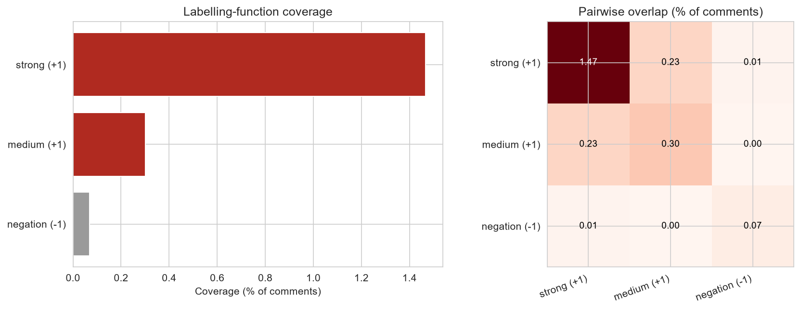
The care vocabulary (vet, feed, walk, train, adopt, …) is deliberately kept out of the label so it can later be a legitimate feature, because the label does not depend on care words, a model that leans on them has generalized. Two costs follow: a zero means "no rule fired", not "confirmed non-owner", so the negatives are unlabeled positives (a positive-and-unlabeled problem) and recall against these labels is not real recall; and the label inherits the rules' blind spots, so an owner who never writes a possession phrase is labeled negative. Both are why evaluation must lean on the rubric labels, not the rules' own recall.
Decoupling, and the Ablation That Measures Leakage
The label is a regex over comment text, and any feature that carries the same information lets the model rebuild the rule. So the three LFs, the user/creator-level "ownership rate" (which, for the 67% who comment once, is literally that comment's own label), and per-animal one-hots are all dropped, leaving 17 structured features that never touch the label: comment-level style, the comment's care-term count, and commenting-only user and creator aggregates. Aggregates are computed once over the corpus and read from one table by both training and scoring; the split is by userid, so no user sits on both sides. The main model's TF-IDF vocabulary treats the 39 rule-trigger content words as stop words; a second model keeps them; the two differ in one thing, so the gap between their scores measures how much of a high score is the rule reconstructing itself.
| Model (held-out users, vs rule labels) | ROC-AUC | PR-AUC |
|---|---|---|
| Logistic regression | 0.8627 | 0.1243 |
| Random forest | 0.8602 | 0.1157 |
| XGBoost (restricted vocabulary) | 0.9109 | 0.2095 |
| XGBoost (full vocabulary, ablation) | 0.9639 | 0.3385 |
XGBoost wins on both metrics, about 0.05 ROC-AUC over both baselines and nearly doubling PR-AUC against logistic regression; the two baselines land within 0.003 of each other, which pins the gain on the learner (the feature matrix is identical across all three rows). At a 1.52% positive rate PR-AUC is the figure to read: the ROC framing compresses the masked-0.91 vs full-0.96 gap into what reads as a rounding detail (5.8% relative), while PR-AUC exposes it: 0.21 vs 0.34, a rule-reconstruction gap of 0.13, 62% relative. Letting the rule's own words into the vocabulary inflates performance by almost two thirds.
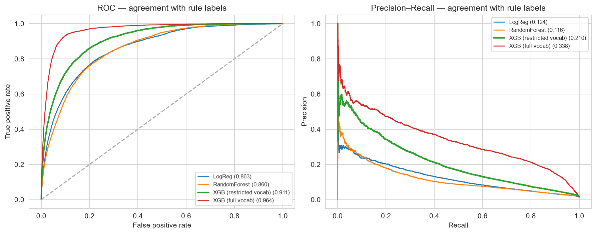
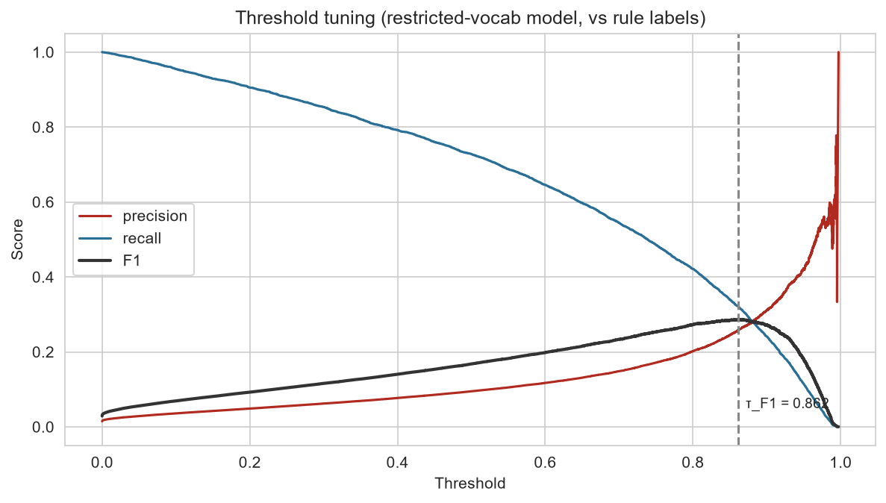
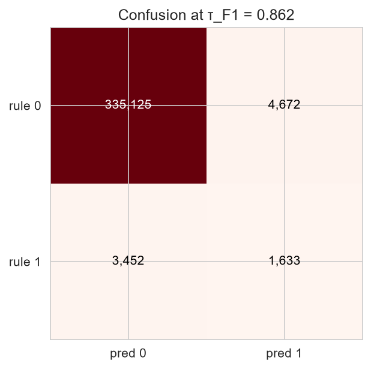
Two Kinds of Label, and Two Operating Points
There are two kinds of label, answering different questions: rule labels (344,882 held-out comments) measure how well the model reproduces the rules; rubric labels (300 hand-checked comments) measure how often the model is right about a real person. The 300 are drawn across five strata: where the rules fire, where care words appear without possession, and where the rules stay silent, the last most important, labeled against a fixed rubric (LLM-assisted, spot-checked, zero undecidable), and because strata are sampled at very different rates, every metric is corpus-weighted.
| Stratum | Definition | Owner rate | 95% Wilson CI |
|---|---|---|---|
| S1 strong | strong possession fires | 0.933 | [0.841, 0.974] (56/60) |
| S2 medium only | weaker context | 0.417 | [0.301, 0.543] (25/60) |
| S3 negation | non-ownership | 0.067 | [0.018, 0.213] (2/30) |
| S4 care, no possession | rule-silent | 0.100 | [0.047, 0.201] (6/60) |
| S5 no signal | rule-silent | 0.056 | [0.024, 0.124] (5/90) |
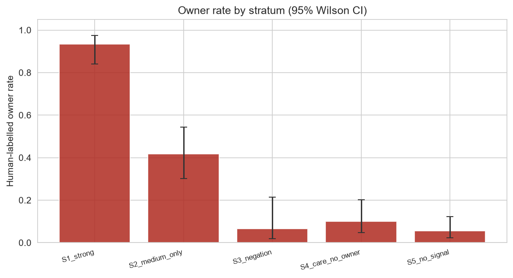
The operating threshold is selected on held-out rule labels (never on the rubric), landing at τ_F1 = 0.862, which is what makes the next figures out-of-sample statements. The two operating points trade off:
| Threshold | Selected on | Precision vs rubric | Recall vs rubric |
|---|---|---|---|
| τ_F1 = 0.862 | held-out rule labels | 0.575, 95% CI [0.172, 0.958] | 0.247, [0.065, 0.585] |
| τ_P80 = 0.920 | the rubric sample itself | 0.938 (in-sample, optimistic) | 0.217 |
τ_F1 is the headline because its threshold and its evaluation use different data: precision 0.58 means that of the users it flags, roughly six in ten really own a pet, and the interval [0.17, 0.96] spans almost the whole range; on 300 labels that is the honest width, and the point estimate should not be quoted alone. τ_P80 looks better and is worth less: its 0.938 precision is measured on the same 300 comments the threshold was chosen from, so it is in-sample and optimistic, carries no interval, and appears here only for completeness.
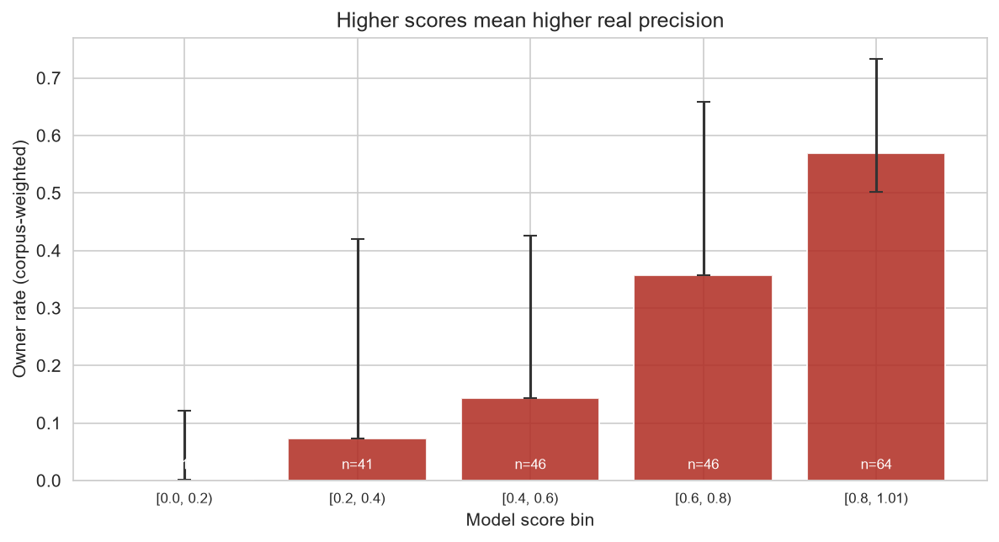
The test that matters is the rule-silent region. On the S4 band (care words present, no possession, n=60, 6 true owners) the two models diverge: on rule labels the full-vocabulary model wins 0.96 vs 0.91, but on the S4 rubric labels the ordering reverses, the restricted-vocabulary model 0.704 beating full-vocabulary 0.614. The full-vocabulary model only wins where the rules already fire, winning at reconstruction, losing at finding owners the rules miss. Confirmed examples like "i remembered my doggy baby named denver" and "i have a golden retriever and it was so hard to train him" contain no possession phrase the regexes match. Cautions: the S4 AUC rests on 60 comments, 6 positives, no interval, and covers only part of the rule-silent region.
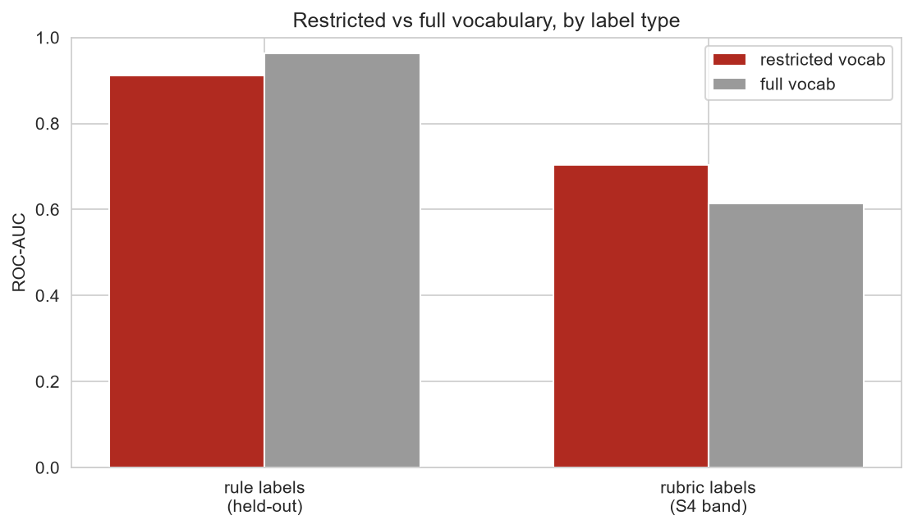
What the Model Keys On
SHAP on the restricted-vocabulary model (over a 20,000-row sample of the held-out set) puts comment length and reaction structure near the top, with the care-term count and creator/user commenting behavior close behind. No animal noun appears; the mechanical reason is that they are not in the vocabulary, and the decoupling worked in that narrow sense. Two features deserve a note: care_term_count ranks twelfth by gain (256.4), contributing without carrying the model; and several of the highest-gain TF-IDF terms are Spanish (que, los, por), so the model is partly detecting language (non-English comments rarely get an English possession phrase), a real pattern, and a fragile basis for a conclusion.
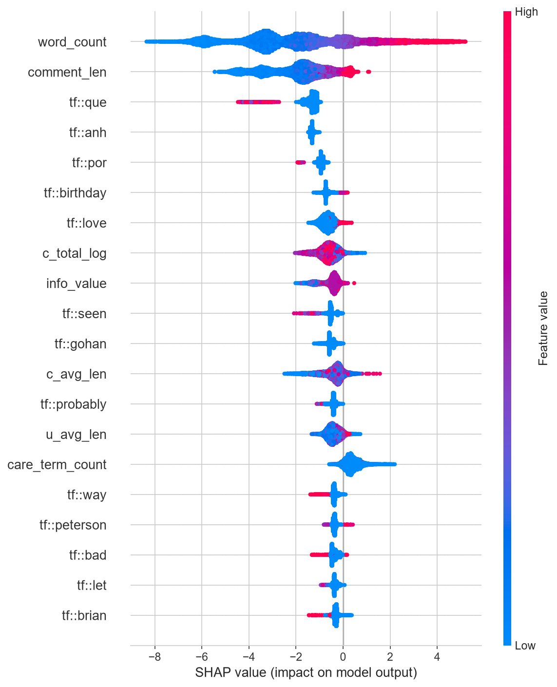
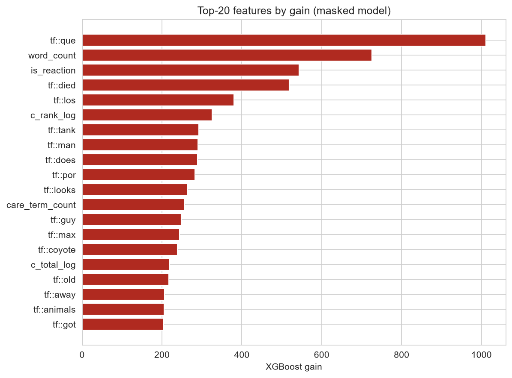
Full-corpus Scoring, and Reading the Ranking as Placement
All 5,818,979 comments are scored through the identical pipeline in 2.2 minutes: the same global aggregates, the same fitted vectorizer, the same model. On held-out test users the maximum absolute difference between the training-time and scoring-time score is exactly zero, the train/serve consistency that computing aggregates once was meant to buy. A user's score is the maximum over that user's comments: 91,443 likely owners (3.60% of 2,536,890) at τ_F1, and 44,623 (1.76%) at τ_P80.
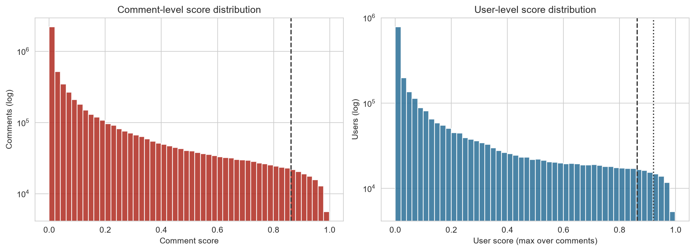
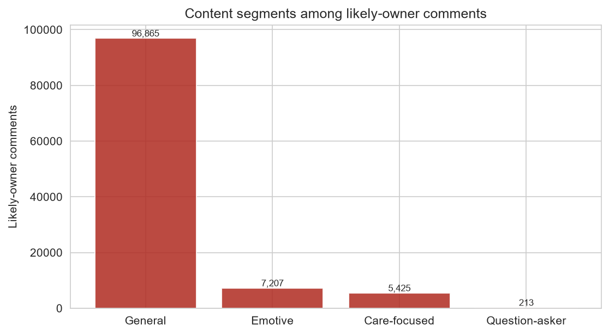
Ranked by predicted likely-owner share of audience (minimum 1,000 unique users, so a small channel cannot top the list on a handful of comments), the leaders are training and small-pet channels. But the share alone runs two advertiser questions together: how efficiently a channel reaches owners, and how many owners it reaches at all. Splitting them changes the answer:
| Channel | Audience (users) | Likely-owner share | Likely owners reached |
|---|---|---|---|
| Zak Georges Dog Training rEvolution | 13,404 | 0.513 | 6,870 |
| StormyRabbits | 4,285 | 0.446 | 1,913 |
| Lennon The Bunny | 6,488 | 0.441 | 2,858 |
| Cole & Marmalade | 31,883 | 0.267 | 8,500 |
| RaleighLink14 | 17,785 | 0.230 | 4,095 |
| Gone to the Snow Dogs | 25,710 | 0.154 | 3,970 |
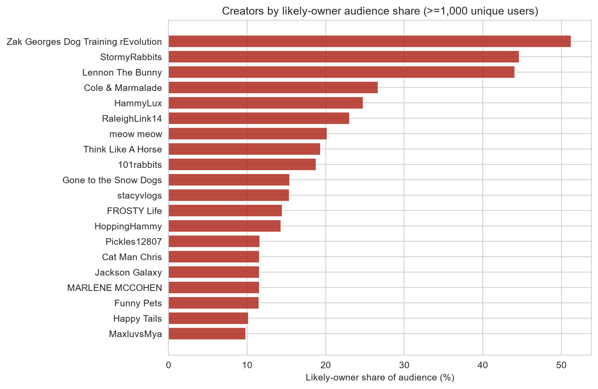
The two bold values fall on different rows. Zak George converts audience to owners at nearly twice the rate of Cole & Marmalade (0.513 vs 0.267), yet Cole & Marmalade reaches 24% more owners in absolute terms (8,500 vs 6,870), because its audience is 2.4 times larger. When the constraint is cost per owner reached, rank on share; when it is total owners reached, rank on owner count; a budget that ranks on share alone will systematically under-weight the large mid-share channels. Where this ranking applies: it supports an ordering of channels, not a promise of audience size; no single channel's share should be quoted to an advertiser as a measured fact, because precision against the rubric sample is only 0.58 with an interval of [0.17, 0.96]. The level does not survive, the ordering does; every channel is scored by the same model at the same threshold, so a comparison cancels most of the bias.
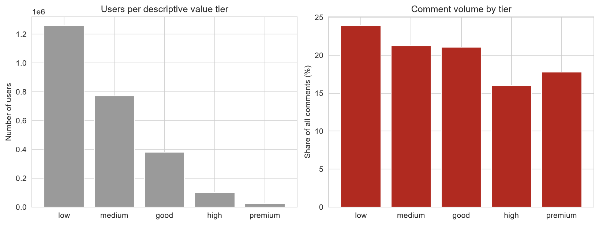
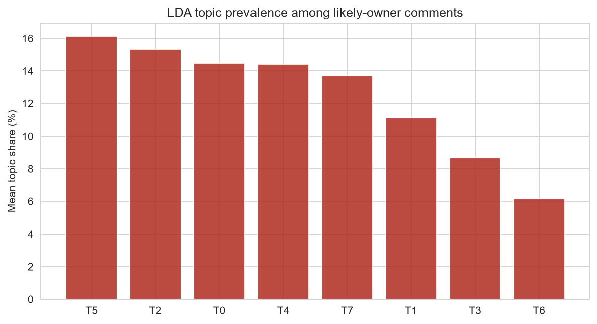
Limitations & Reproducibility
The training labels are rules, not truth. The negatives are unlabeled positives, so recall against the rules is not real recall, and the model is trained to agree with the rules' blind spots.
The headline interval is wide. Precision at τ_F1 against the rubric labels is 0.58, interval [0.17, 0.96] on 300 labels; everything in the placement section inherits that width. τ_P80's 0.938 is in-sample, with no interval.
The generalization evidence is thin. The S4-band comparison rests on 60 comments with 6 positives, and the rule-silent lift figures (roughly 4× in S4, 9× in S5) rest on 8 and 2 comments.
Everything is English-only and comment-level. About 94% of comments are dominantly Latin script, and the model covers that slice; a comment is weak evidence of ownership, ownership is not purchase intent, and "user behavior" reflects what the scrape captured.
Reproduction
One seed (42) throughout; GroupShuffleSplit and StratifiedGroupKFold by userid; aggregates, scores, and the validation sample cached under artifacts/, the model, vectorizer, and feature spec under models/. About 29 minutes from scratch (labeling-function scan ~77s, hyper-parameter search 17.1 min, full-corpus scoring 2.2 min):
uv run jupyter nbconvert --to notebook --execute --inplace "YouTube Comments Analysis.ipynb"